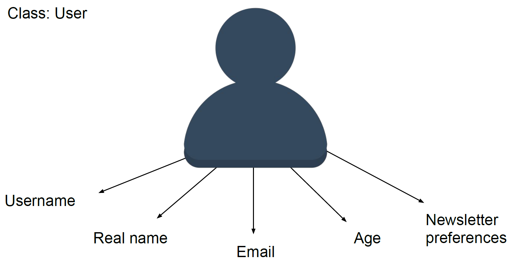
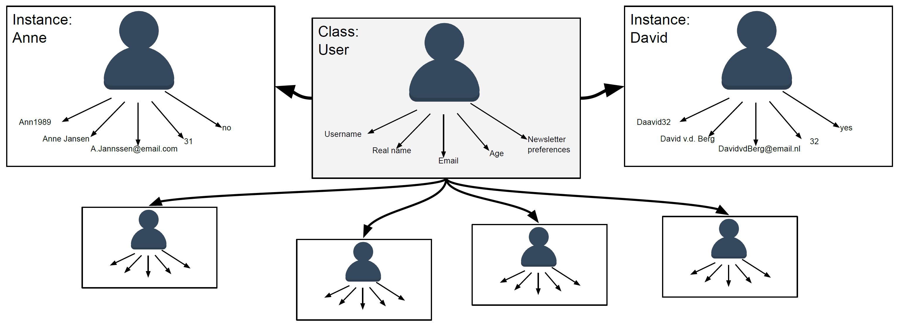

Classes, Objects and Instances¶
1. Object Oriented Programming¶
Python is a so-called “object oriented” programming language. Throughout the previous tutorials in this sequence, you have already encountered numerous objects. Whenever we defined a variable, for example a string variable that stored your name, we were creating objects. These objects contain data, which can concern both properties (like your age, a list of names of people that take a course, etc.) or procedures (like a function).
2. Classes¶
Classes can be understood as blueprints or templates for objects. They define a structure for storing the data related to a particular type of objects.
Consider for example a situation where you want to keep a record of the users of a program. For each user, we will need to store several properties, such as their username, email address, password, etc. Since these properties will be the same for every user, we can efficiently use a class to predefine what should and can be stored regarding each user.

Exercise 1: When to use a class?¶
What does the class apply to? Students, dogs, doors? That is, what are you defining a blueprint for?
Write down a couple of properties that relate to the class that you came up with.
Also, write down in what datatype each property should or can be stored.
3. Class Objects / Instances¶
When we create an object based on a class, we “copy” the data structure defined by the class (the blueprint) and fill in the actual values that are applicable. The object that is created is called an instance of the class. The class functions as a guide for knowing which information can and should be stored for each instance.
Going back to our example regarding the users of a program, each user would be an instance of the class. For each user we copy the blueprint of the information we need to store and we fill in the values for each individual.
Creating an object of a class is called “initiating the class”. There is no limit to the number of instances that can be created. All instances have in common the attributes that are stored and the behavior related to the class.

Exercise 2: What is an instance?¶
What would be an example of an instance of your class?
For two instances, fill in the values of the properties (conceptually).
Class objects consist of:
An identity, which refers to the unique name of the object. Remember, each instance of a class is a unique, individual object that we can specifically refer to in our code.
A states, which is captured by the defined properties. For example, the username and age of a user describe the state of the instance.
The behaviors, which are captured in specific functions (methods) that relate to the class. You will find some examples in later sections.

Exercise 3: Identity, States and Behaviors¶
How are the instances identified?
What are states of your instances?
Come up with at least two relevant behaviors. (Are you having trouble with this? You can also return to this question when you have read the part on methods.)
4. Creating a Class in Python¶
Declaring an object or initiating a class refers to creating an instance of a class. To do this, we first need to define the class. This is done using the class keyword, followed by a colon. We then indent the next line and start defining attributes and methods (functions that capture the behaviors).
class User:
...
4.1 Specifying Class Attributes (States)¶
Class attributes concern those properties that are shared among all instances. In our example of the User class, this could be the case for the property userType. Assuming that all instances of the User class concern normal users (and not, for example, admins), we can create the userType as shown below. This attribute is copied for all instances of this class.
# Specify the class "User"
class User:
# Defining class attributes:
Usertype = "Normal User"
4.2 Specifying Instance Attributes (States)¶
In contrast to class attributes, instance attributes are unique properties of class instances. Their values are not copied from the blueprint, but specified upon the creation of the instance.
In our example of the User class, instance attributes concern the real name of the user, age, email and anything else that is user-specific.
These instance-specific properties can be specified using the __init__() function. This function assigns values to instance properties upon initiation of a class. That is, whenever you create a new instance, this function will run automatically.
As you can see below, __init__() in our example takes as first argument self. This refers to the instance at hand. In our case, this is a specific user. As we will see later, we do not have to provide a value for this argument when we create an instance. The reason for this is that Python will provide it for us.
We can assign values to properties in the __init__() function of a class by typing self. (referring to the instance that is being created) followed by the name of the property. Then, we assign a value using =. In the example below, we did so for the real name, age and email of a user instance.
# Specify the class "User"
class User:
# Defining class attributes:
Usertype = "Normal User"
# Using __init__() to assign values to instance attributes:
def __init__(self, name, age, email):
self.realName = name
self.age = age
self.email = email
4.3 Specifying Methods for a Class (Behaviors)¶
A method is very similar to a function, but it is associated with a specific class. Just like functions, we specify methods with the def keyword, followed by the name of the function, possible arguments between brackets and a colon. Do not forget to indent the line of code that follows!
NOTE: What is indentation? Are you not sure what indentation is and why it is so important in Python? Please check out the section on “Indentation” on the help page. You will find everything you need to know about indentation there!
NOTE: How to formulate functions? Do you want to have another look at how you can call and formulate functions? Click here to go back to the tutorial on functions.
To illustrate, let us return to our previous example. We will add a method to the User class which simulates a message stating the user has logged on (by printing the message to the console).
# Specify the class "User"
class User:
# Defining class attributes:
Usertype = "Normal User"
# Using __init__() to assign values to instance attributes:
def __init__(self, name, age, email):
self.realName = name
self.age = age
self.email = email
# Defining methods:
def logon(self):
print(self.RealName + " has logged on.")
Exercise 4: Specifying a Class in Python¶
Start by using the
classkeyword and chose a name for the class.Next, formulate several attributes. Include both class and instance attributes.
Pick a behavior you could capture in a method. (Similar to the earlier example, this can be a simulation by printing a sentence.)
Add this method to the class.
5. Create an Instance of a Class¶
Now that we have developed a class, it is time to create instances. Recall that a class is a blueprint for objects. When we initiate a class, we create an instance that follows this blueprint, but with actual values filled in for the properties.
We can store an instance of a class to a variable. For example we can run Marjolein = User() to create the user “Marjolein”, based on the class User. The class attributes of the User (the user type) are copied for the instance “Marjolein”. However, we also need to specify the user-specific values to create the instance. Those values can be specified as arguments Marjolein = User("Marjolein", 25, "marjolein@email.nl"). These arguments will be passed on to the __init__() function which we specified, which will ensure that the specific values are assigned to the instance variables. (Be aware to provide the arguments in the same order in which they are used in __init__().)
Ones the instance has been created, we can retrieve the value for a particular attribute by typing the name of the variable to which the instance was stored, followed by a . and the name of the attribute. For example, Marjolein.age will return the value for age for the instance Marjolein.
# Specify the class "User"
class User:
# Defining class attributes:
Usertype = "Normal User"
# Using __init__() to assign values to instance attributes:
def __init__(self, name, age, email):
self.realName = name
self.age = age
self.email = email
# Defining methods:
def logon(self):
print(self.RealName + " has logged on.")
Marjolein = User("Marjolein", 25, "marjolein@email.nl")
print(Marjolein.age)
Exercise 5: Creating an Instance of your Class¶
Create an instance of your class. Be aware of the datatypes of the arguments that you provide. If the attribute is stored as a string value, make sure that you pass a string as an argument.
Print the value of one of the class attributes.
Print the value of one of the instance attributes.
Print a small piece of text in which you include several of the attributes of the instance you just created.